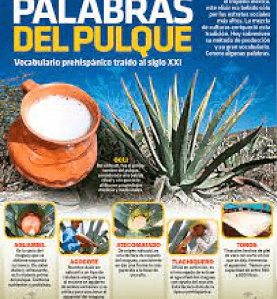
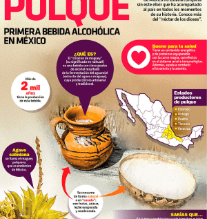

Bebida de origen prehispánico
llamada también
“la bebida
de los Dioses”.
Historia
Te contamos todo sobre el Pulque, esta
bebida emblematica de México.

¿Cómo, cuándo, quién?
El origen del pulque.
Te presentamos en esta infografía una
breve descripción de los inicios del pulque.

¿Dónde?
Estados pulqueros.
El maguey pulquero es originario de México, se
produce principalmente en los estados de Hidalgo,
Tlaxcala, Estado de México y Puebla, pero no son
los únicos, aquí te mostramos en que estados se
produce el pulque.